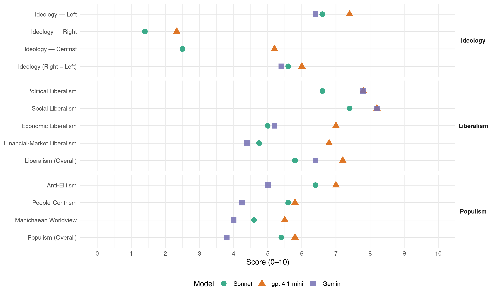

ALP (Australia, 2019)
manifesto_id 63320_201905
Get full text: This site shows derived annotations and short verbatim quotes only. The full manifesto text is © Manifesto Project / WZB — obtain it via manifesto-project.wzb.eu using the manifesto_id above.
Headline scores
| Dimension | Sonnet | gpt-4.1-mini | Gemini |
|---|---|---|---|
| Populism (Overall) | 5.4 | 5.8 | 3.8 |
| Anti-Elitism | 6.4 | 7.0 | 5.0 |
| People-Centrism | 5.6 | 5.8 | 4.2 |
| Manichaean Worldview | 4.6 | 5.5 | 4.0 |
| Ideology (Right − Left) | 5.6 | 6.0 | 5.4 |
| Liberalism (Overall) | 5.8 | 7.2 | 6.4 |
| Political Liberalism | 6.6 | 7.8 | 7.8 |
| Social Liberalism | 7.4 | 8.2 | 8.2 |
| Economic Liberalism | 5.0 | 7.0 | 5.2 |
| Financial-Market Liberalism | 4.8 | 6.8 | 4.4 |
Evidence per dimension
Economic Liberalism
Gemini · score 6.0 · verified · chunk 1
“same tax relief for small business”
Labor will deliver the same tax relief for small business as the Liberals, but we’ll do it
Gemini · score 4.0 · verified · chunk 2
“cap the price increases of private health insurers”
Government to cap the price increases of private health insurers at 2% for two years.
Gemini · score 4.0 · verified · chunk 3
“Establish a Mandatory Code of Conduct to address market power imbalance”
A Shorten Labor Government will: Establish a Mandatory Code of Conduct to address market power imbalance between dairy farmers
Gemini · score 7.0 · verified · chunk 4
“increase competition in markets dominated by a few large firms”
initiatives that will build the strength of our communities and increase competition in markets dominated by a few large firms.
Gemini · score 5.0 · verified · chunk 5
“attract international investment to create the skilled”
small and medium sized businesses and attract international investment to create the skilled jobs of the
gpt-4.1-mini · score 7.0 · verified · chunk 1
“supporting trade exposed industries to keep Australian businesses competitive”
Supporting trade exposed industries to keep Australian businesses competitive: tailored treatment through the safeguard mechanism and a $300 million fund to help business reduce pollution.
gpt-4.1-mini · score 7.0 · verified · chunk 2
“free markets, competition, free enterprise, deregulation/privatization, tax efficiency, trade openness”
Labor will invest in better vocational education and enduring careers for Australians. We will pay for this by making multinationals pay their fair share and closing tax loopholes used by the top end of town.
gpt-4.1-mini · score 7.0 · verified · chunk 3
“free markets, competition, free enterprise, deregulation/privatization, tax efficiency, trade openness”
Labor will support local businesses by:Tripling penalties for circumventing trade remedies. Better resourcing the Anti-Dumping Commission by increasing funding by $3.5 million a year, which will increase staff numbers at the Commission by about 30.
gpt-4.1-mini · score 7.0 · verified · chunk 4
“Labor will create a Competition and Growth Taskforce to sit within Treasury and include staff from diverse backgrounds”
LABOR’S PLAN: Labor will create a Competition and Growth Taskforce to sit within Treasury and include staff from diverse backgrounds including not-for-profits, superannuation and the cooperative and mutuals sector. The Taskforce will work on issues tasked to it by government and undertake independent research and policy development.
gpt-4.1-mini · score 7.0 · verified · chunk 5
“support research and development, manufacturing, assembly and retrofitting capability”
Labor’s plan will support research and development, manufacturing, assembly and retrofitting capability in all forms of electric land transport vehicles, ensuring that Australia has a global role as a research and development centre and extending our manufacturing capabilities in all vehicles deploying electric technology and hydrogen, battery manufacturing and charging infrastructure.
Sonnet · score 5.0 · verified · chunk 1
“corporate tax rate for small businesses reducing to 25 per cent”
Labor will: Support the corporate tax rate for small businesses reducing to 25 per cent by 2021-22.
Sonnet · score 4.0 · mixed · chunk 2
“cap the price increases of private health insurers”
Labor Government to cap the price increases of private health insurers at 2% for two years.
Sonnet · score 4.0 · mixed · chunk 3
“Mandatory Code of Conduct to address market power imbalance”
Establish a Mandatory Code of Conduct to address market power imbalance between dairy farmers and processors.
Sonnet · score 5.0 · mixed · chunk 4
“increase competition in markets dominated by a few large firms”
we need initiatives that will build the strength of our communities and increase competition in markets dominated by a few large firms
Sonnet · score 5.0 · mixed · chunk 5
“reform the capital gains tax concession”
We will reform the capital gains tax concession and allow existing investors to maintain their current capital gains tax and negative gearing entitlements.
Financial-Market Liberalism
Gemini · score 4.0 · verified · chunk 1
“disputes with their banks and other financial service providers”
free of charge, to Australians who find themselves in disputes with their banks and other financial service providers.
Gemini · score 3.0 · verified · chunk 2
“respond to any referrals for criminal prosecution which stem from the Financial Services Royal Commission”
to equip the Commonwealth Director of Public Prosecutions to respond to any referrals for criminal prosecution which stem from the Financial Services Royal Commission.
Gemini · score 5.0 · verified · chunk 3
“quadruple the compensation caps at AFCA”
A Shorten Labor Government will quadruple the compensation caps at AFCA for consumers from $500,000 to $2 million
Gemini · score 6.0 · verified · chunk 4
“ensuring fairer access to capital”
The Labor Party committed to ensuring fairer access to capital in 2016, with Parliament later adopting the policy.
Gemini · score 4.0 · verified · chunk 5
“giving institutional investors better tax concessions”
viable Build to Rent sector in Australia – giving institutional investors better tax concessions; encouraging more construction
gpt-4.1-mini · score 7.0 · verified · chunk 1
“Labor’s Banking Fairness Fund will make the banks pay their fair share”
Labor’s Banking Fairness Fund will make the banks pay their fair share to support the victims of banking misconduct.
gpt-4.1-mini · score 7.0 · verified · chunk 2
“Clean Energy Finance Corporation (CEFC) to support clean hydrogen development”
Labor will implement a six-point National Hydrogen Plan that will allocate $1 billion of funding from the Clean Energy Finance Corporation (CEFC) to support clean hydrogen development.
gpt-4.1-mini · score 7.0 · verified · chunk 3
“Labor will quadruple the compensation caps at AFCA for consumers from $500,000 to $2 million”
A Shorten Labor Government will quadruple the compensation caps at AFCA for consumers from $500,000 to $2 million, double the compensation cap for small businesses to $2 million, and double the cap for farmers to $4 million.
gpt-4.1-mini · score 7.0 · verified · chunk 4
“The requirement parallels measures introduced in the United States and Britain. The measure would apply from the 2021 financial year”
firms, our Tax Haven Transparency package, and the annual release of tax data for more large private firms. The requirement parallels measures introduced in the United States and Britain. The measure would apply from the 2021 financial year, to allow the Australian Securities and Investments Commission time to issue appropriate guidance, and for firms to comply with the new requirements.
gpt-4.1-mini · score 6.0 · verified · chunk 5
“making multinationals pay their fair share and closing tax loopholes”
We will pay for it by making multinationals pay their fair share and closing tax loopholes used by the top end of town.
Sonnet · score 4.0 · verified · chunk 1
“big banks a $17 billion tax cut”
In stark contrast, the Liberals have spent years trying to give the big banks a $17 billion tax cut.
Sonnet · score 5.0 · verified · chunk 2
“resources it needs to take on the deep pockets of the banks”
We need to make sure our CDPP has the resources it needs to take on the deep pockets of the banks, who have already spent millions in legal fees.
Sonnet · score 5.0 · verified · chunk 3
“quadruple the compensation caps at AFCA”
A Shorten Labor Government will quadruple the compensation caps at AFCA for consumers from $500,000 to $2 million.
Sonnet · score 5.0 · mixed · chunk 4
“access to capital”
Co-ops and mutuals face a number of barriers, ranging from access to capital, equal access to grants
Sonnet · score 5.0 · verified · chunk 5
“Limited recourse borrowing in Self-Managed Superannuation Funds”
Limited recourse borrowing in Self-Managed Superannuation Funds has exploded in recent years, increasing risk in the superannuation system and crowding out first homeowners.
Political Liberalism
Gemini · score 7.0 · verified · chunk 1
“independent Parliamentary Budget Office analysis”
Voters would have to elect a Morrison Government twice to see them come to fruition – it’s ridiculous. Independent Parliamentary Budget Office analysis shows that
Gemini · score 8.0 · verified · chunk 2
“National Integrity Commission to prevent, investigate and eliminate corruption”
establish a National Integrity Commission to prevent, investigate and eliminate corruption inside the federal government
Gemini · score 8.0 · verified · chunk 3
“maintaining the ABC as an independent and comprehensive national broadcaster”
records Labor’s commitment to maintaining the ABC as an independent and comprehensive national broadcaster, never to be privatised.
Gemini · score 8.0 · verified · chunk 4
“modernise our Constitution to appoint an Australian as our Head of State”
provide the national leadership and maturity required to reform and modernise our Constitution to appoint an Australian as our Head of State.
Gemini · score 8.0 · verified · chunk 5
“modernise our Constitution to appoint an Australian”
leadership and maturity required to reform and modernise our Constitution to appoint an Australian as our Head
gpt-4.1-mini · score 8.0 · verified · chunk 1
“access to health care should depend on your Medicare card”
Labor believes access to health care should depend on your Medicare card, not your credit card.
gpt-4.1-mini · score 8.0 · verified · chunk 2
“establish a National Integrity Commission to prevent, investigate and eliminate corruption”
A Shorten Labor Government will establish a National Integrity Commission to prevent, investigate and eliminate corruption inside the federal government and the public sector.
gpt-4.1-mini · score 8.0 · verified · chunk 3
“Labor will establish a new position of Second Commissioner – Appeals within the Australian Taxation Office”
A Shorten Labor Government will legislate to establish a new position of Second Commissioner – Appeals within the Australian Taxation Office, reporting to the Commissioner of Taxation, to head up a new appeals area within the Australian Taxation Office.
gpt-4.1-mini · score 7.0 · verified · chunk 4
“Labor will establish a National LGBTIQ Ministerial Advisory Council Protect LGBTIQ students and staff from discrimination in schools”
A Shorten Labor Government will deliver a fairer Australia for LGBTIQ people by tackling discrimination and giving a stronger voice to LGBTIQ Australians. Labor has a proud record of promoting and defending the rights of LGBTIQ people. When Labor was last in Government we introduced an unprecedented number of reforms and rights protections for LGBTIQ Australians, ending legal discrimination in 85 pieces of Commonwealth legislation. We fought side by side with LGBTIQ Australians in the fight for Marriage Equality, and together, we won. We understand, however, that there is more to do. LABOR’S PLAN A Shorten Labor Government will: Establish a National LGBTIQ Ministerial Advisory Council Protect LGBTIQ students and staff from discrimination in schools Work with the states and territories on a nationwide ban on so-called “LGBTIQ Conversion Therapy” Establish a full-time LGBTIQ Human Rights Commissioner within the Australian Human Rights Commission Work to remove all remaining discrimination at the federal level Provide small grants to LGBTIQ Community organisations Provide $10 million to the new Victorian Pride Centre $600,000 for JoyFM Make HIV history, with a package of measures to end new infections Work to ensure aged care is appropriate for the LGBTIQ community.
gpt-4.1-mini · score 8.0 · verified · chunk 5
“hold a national vote to give every Australian voter a voice”
A Shorten Labor Government will hold a national vote to give every Australian voter a voice in the process of becoming a republic with an Australian Head of State.
Sonnet · score 6.0 · verified · chunk 1
“independent Environment Protection Agency”
reform Australia’s environmental laws and create a new, independent Environment Protection Agency – if we get the entire framework right, we will protect our environment for our children and grandchildren.
Sonnet · score 7.0 · verified · chunk 2
“independent statutory body, with sufficient resources”
The Commission will operate as an independent statutory body, with sufficient resources to ensure it is able to carry out its functions regardless of the government of the day.
Sonnet · score 6.0 · verified · chunk 3
“independent and comprehensive national broadcaster”
Labor’s commitment to maintaining the ABC as an independent and comprehensive national broadcaster, never to be privatised.
Sonnet · score 7.0 · verified · chunk 4
“hold a national vote”
hold a national vote seeking the views of the Australian people about becoming a republic
Sonnet · score 7.0 · verified · chunk 5
“hold a national vote seeking the views”
In our first term of government hold a national vote seeking the views of the Australian people about becoming a republic.
Liberalism (Overall)
Gemini · score 6.0 · verified · chunk 1
“same tax relief for small business”
Labor will deliver the same tax relief for small business as the Liberals, but we’ll do it
Gemini · score 6.0 · verified · chunk 2
“National Integrity Commission to prevent, investigate and eliminate corruption”
establish a National Integrity Commission to prevent, investigate and eliminate corruption inside the federal government
Gemini · score 6.0 · verified · chunk 3
“maintaining the ABC as an independent and comprehensive national broadcaster”
records Labor’s commitment to maintaining the ABC as an independent and comprehensive national broadcaster, never to be privatised.
Gemini · score 8.0 · verified · chunk 4
“increase competition in markets dominated by a few large firms”
initiatives that will build the strength of our communities and increase competition in markets dominated by a few large firms.
Gemini · score 6.0 · verified · chunk 5
“modernise our Constitution to appoint an Australian”
leadership and maturity required to reform and modernise our Constitution to appoint an Australian as our Head
gpt-4.1-mini · score 7.0 · verified · chunk 1
“making multinationals pay their fair share and closing tax loopholes”
We will pay for it by making multinationals pay their fair share and closing tax loopholes used by the top end of town.
gpt-4.1-mini · score 7.0 · verified · chunk 2
“making multinationals pay their fair share and closing tax loopholes used by the top end of town”
We will pay for these commitments by making multinationals pay their fair share and closing tax loopholes used by the top end of town.
gpt-4.1-mini · score 8.0 · verified · chunk 3
“making multinationals pay their fair share and closing tax loopholes used by the top end of town”
We will pay for these commitments by making multinationals pay their fair share and closing tax loopholes used by the top end of town.
gpt-4.1-mini · score 7.0 · verified · chunk 4
“Labor will create a Competition and Growth Taskforce to sit within Treasury and include staff from diverse backgrounds”
LABOR’S PLAN: Labor will create a Competition and Growth Taskforce to sit within Treasury and include staff from diverse backgrounds including not-for-profits, superannuation and the cooperative and mutuals sector. The Taskforce will work on issues tasked to it by government and undertake independent research and policy development.
gpt-4.1-mini · score 7.0 · verified · chunk 5
“making multinationals pay their fair share and closing tax loopholes”
We will pay for it by making multinationals pay their fair share and closing tax loopholes used by the top end of town.
Sonnet · score 6.0 · verified · chunk 1
“Labor has a comprehensive plan to restore fairness”
Labor has a comprehensive plan to restore fairness to financial services. In true Liberal form, it only took them 36 days to backflip on a recommendation from the Royal Commission.
Sonnet · score 6.0 · verified · chunk 2
“restore integrity to the Australian Research Council”
Labor will legislate to restore the integrity of the Australian Research Council.
Sonnet · score 5.0 · verified · chunk 3
“strong civil society is vital to democracy”
A strong civil society is vital to democracy, inclusion, transparency and openness, accountability, and the protection of minorities and marginalised groups.
Sonnet · score 6.0 · verified · chunk 4
“tackling discrimination and giving a stronger voice to LGBTIQ”
deliver a fairer Australia for LGBTIQ people by tackling discrimination and giving a stronger voice to LGBTIQ Australians
Sonnet · score 6.0 · verified · chunk 5
“initiate an appropriate secondary referendum under the Constitution”
When detailed constitutional changes are prepared, initiate an appropriate secondary referendum under the Constitution.
Anti-Elitism
Gemini · score 6.0 · verified · chunk 1
“loopholes used by the top end of town”
by making multinationals pay their fair share and closing tax loopholes used by the top end of town.
Gemini · score 4.0 · verified · chunk 2
“closing tax loopholes used by the top end of town”
by making multinationals pay their fair share and closing tax loopholes used by the top end of town.
Gemini · score 4.0 · verified · chunk 3
“closing tax loopholes used by the top end of town”
making multinationals pay their fair share and closing tax loopholes used by the top end of town.
Gemini · score 7.0 · verified · chunk 4
“defunded it at the behest of their vested interest mates”
Markets Advisory Committee by the Liberals, who defunded it at the behest of their vested interest mates. The Taskforce would be asked to immediately focus
Gemini · score 4.0 · verified · chunk 5
“loopholes for the top end of town”
manufacturing and plans to deliver bigger tax loopholes for the top end of town. After six years of
gpt-4.1-mini · score 8.0 · verified · chunk 1
“making multinationals pay their fair share and closing tax loopholes”
We will pay for it by making multinationals pay their fair share and closing tax loopholes used by the top end of town.
gpt-4.1-mini · score 6.0 · verified · chunk 2
“making multinationals pay their fair share and closing tax loopholes used by the top end of town”
We will pay for these commitments by making multinationals pay their fair share and closing tax loopholes used by the top end of town.
gpt-4.1-mini · score 7.0 · verified · chunk 3
“making multinationals pay their fair share and closing tax loopholes used by the top end of town”
We will pay for these commitments by making multinationals pay their fair share and closing tax loopholes used by the top end of town.
gpt-4.1-mini · score 7.0 · verified · chunk 4
“The Liberals don’t like competition. They prefer to defend their mates in the top end of town.”
Increased concentration is often associated with reduced competition, resulting in higher prices and higher inequality, and lower productivity, innovation, investment, quality and consumer choice. The Liberals don’t like competition. They prefer to defend their mates in the top end of town. Under the Abbott-Turnbull-Morrison Government, it fell to Labor to legislate fair competition reforms, including Small Business Access to Justice, which helps small businesses take on market dominant competitors in court without the risk of being bankrupted by the legal fees of their opponent.
gpt-4.1-mini · score 7.0 · verified · chunk 5
“The Liberals’ record on vehicle manufacturing is nothing but destruction”
The Liberals’ record on vehicle manufacturing is nothing but destruction. They drove the major vehicle production companies offshore, costing thousands of workers their jobs and resulting in the closure of Australian firms.
Sonnet · score 8.0 · verified · chunk 1
“bigger tax loopholes for the top end of town”
There is a real choice at the upcoming election between Labor’s plan for properly funded hospitals and the best health care system in the world, or bigger tax loopholes for the top end of town under the Liberals.
Sonnet · score 6.0 · verified · chunk 2
“closing tax loopholes used by the top end of town”
We will pay for these commitments by making multinationals pay their fair share and closing tax loopholes used by the top end of town.
Sonnet · score 6.0 · verified · chunk 3
“closing tax loopholes used by the top end of town”
We will pay for these commitments by making multinationals pay their fair share and closing tax loopholes used by the top end of town.
Sonnet · score 7.0 · verified · chunk 4
“top end of town under the Liberals”
bigger tax loopholes for the top end of town under the Liberals. After six years of dysfunction and chaos
Sonnet · score 5.0 · verified · chunk 5
“bigger tax loopholes for the top end of town”
This election is a choice between Labor’s plans for the electric vehicle manufacturing industry, and the Liberals’ record of destroying jobs in manufacturing and plans to deliver bigger tax loopholes for the top end of town.
Ideology — Centrist
gpt-4.1-mini · score 6.0 · verified · chunk 1
“There is a real choice at the upcoming election between Labor’s plan”
There is a real choice at the upcoming election between Labor’s plan for properly funded hospitals and the best health care system in the world, or bigger tax loopholes for the top end of town under the Liberals.
gpt-4.1-mini · score 4.0 · verified · chunk 2
“working with First Nations people at the national and regional level to make it a reality”
In government, we will work with First Nations people at the national and regional level to make it a reality.
gpt-4.1-mini · score 5.0 · verified · chunk 3
“Labor believes it should be your ability, not your bank balance that determines whether you get the chance to study at university”
Labor believes it should be your ability, not your bank balance that determines whether you get the chance to study at university.
gpt-4.1-mini · score 6.0 · verified · chunk 4
“Labor will work with the states and territories to maximise co-investment opportunities in mobile and other network infrastructure”
Labor will work with the States and Territories to better co-ordinate investment: Labor will work with the States and Territories to maximise co-investment opportunities in mobile and other network infrastructure; ensure that Commonwealth investment in road and rail projects incorporates a communications coverage plan where feasible; and investigate co-building of mobile network infrastructure in areas of defined need such as transport routes, where public land can be leveraged in exchange for cooperation amongst mobile network operators.
gpt-4.1-mini · score 5.0 · verified · chunk 5
“our united Labor team is ready to deliver a fair go for all Australians”
After six years of Liberal cuts and chaos, our united Labor team is ready to deliver a fair go for all Australians Australian Republic and Head of State A Shorten Labor Government will hold a national vote to give every Australian voter a voice in the process of becoming a republic with an Australian Head of State.
Sonnet · score 2.0 · verified · chunk 1
“a real choice at the upcoming election”
There is a real choice at the upcoming election between Labor’s plan for properly funded hospitals and the best health care system in the world, or bigger tax loopholes for the top end of town under the Liberals.
Sonnet · score 2.0 · mixed · chunk 2
“a Fair Go for Multicultural Australia”
We have a plan to deliver a Fair Go for Multicultural Australia.
Sonnet · score 2.0 · verified · chunk 3
“Labor wants to change that”
Currently, a young person from Moreton Bay in Queensland is about five times less likely to get a university degree than someone on Sydney’s North Shore. Labor wants to change that.
Sonnet · score 3.0 · verified · chunk 4
“fair go for all Australians”
our united Labor team is ready to deliver a fair go for all Australians
Sonnet · score 3.0 · verified · chunk 5
“a fair go for regional Australia”
our united Labor team is ready to deliver a fair go for regional Australia. End the chaos. Vote for change. Vote Labor.
Ideology — Left
Gemini · score 7.0 · verified · chunk 1
“making multinationals pay their fair share”
We will pay for it by making multinationals pay their fair share and closing tax loopholes
Gemini · score 6.0 · verified · chunk 2
“making multinationals pay their fair share”
We will pay for it by making multinationals pay their fair share and closing tax loopholes
Gemini · score 6.0 · verified · chunk 3
“making multinationals pay their fair share”
We will pay for these commitments by making multinationals pay their fair share and closing tax loopholes
Gemini · score 8.0 · verified · chunk 4
“stand up to the market power of multinationals”
Fairer Markets For A Fairer Australia Labor will stand up to the market power of multinationals and the top end of town, massively increase penalties
Gemini · score 5.0 · verified · chunk 5
“making multinationals pay their fair share”
We will pay for it by making multinationals pay their fair share and closing tax loopholes
gpt-4.1-mini · score 8.0 · verified · chunk 1
“making multinationals pay their fair share and closing tax loopholes”
We will pay for it by making multinationals pay their fair share and closing tax loopholes used by the top end of town.
gpt-4.1-mini · score 7.0 · verified · chunk 2
“making multinationals pay their fair share and closing tax loopholes used by the top end of town”
We will pay for these commitments by making multinationals pay their fair share and closing tax loopholes used by the top end of town.
gpt-4.1-mini · score 8.0 · verified · chunk 3
“making multinationals pay their fair share and closing tax loopholes used by the top end of town”
We will pay for these commitments by making multinationals pay their fair share and closing tax loopholes used by the top end of town.
gpt-4.1-mini · score 7.0 · verified · chunk 4
“Labor will stand up to the market power of multinationals and the top end of town, massively increase penalties for bad behaviour, fight inequality”
Fairer Markets For A Fairer Australia Labor will stand up to the market power of multinationals and the top end of town, massively increase penalties for bad behaviour, fight inequality and clamp down on anti-consumer behaviour by big business by reforming competition laws.
gpt-4.1-mini · score 7.0 · verified · chunk 5
“This election is a choice between Labor’s plans for the electric vehicle manufacturing industry, and the Liberals’ record of destroying jobs in manufacturing and plans to deliver bigger tax loopholes for the top end of town”
This election is a choice between Labor’s plans for the electric vehicle manufacturing industry, and the Liberals’ record of destroying jobs in manufacturing and plans to deliver bigger tax loopholes for the top end of town. After six years of Liberal cuts and chaos, our united Labor team is ready to deliver a fair go for all Australians.
Sonnet · score 8.0 · verified · chunk 1
“corporate profits are growing five times faster than wages”
At a time when corporate profits are growing five times faster than wages, Labor believes Australians deserve a decent pay rise.
Sonnet · score 6.0 · verified · chunk 2
“making multinationals pay their fair share”
We will pay for these commitments by making multinationals pay their fair share and closing tax loopholes used by the top end of town.
Sonnet · score 6.0 · verified · chunk 3
“same job, same pay”
A Shorten Labor Government will implement a “same job, same pay” policy and introduce a National Labour Hire Licensing Scheme.
Sonnet · score 7.0 · verified · chunk 4
“stand up to the market power of multinationals”
Labor will stand up to the market power of multinationals and the top end of town, massively increase penalties
Sonnet · score 6.0 · verified · chunk 5
“making multinationals pay their fair share”
We will pay for it by making multinationals pay their fair share and closing tax loopholes used by the top end of town.
Ideology (Right − Left)
Gemini · score 6.0 · verified · chunk 1
“making multinationals pay their fair share”
We will pay for it by making multinationals pay their fair share and closing tax loopholes
Gemini · score 5.0 · verified · chunk 2
“making multinationals pay their fair share”
We will pay for it by making multinationals pay their fair share and closing tax loopholes
Gemini · score 5.0 · verified · chunk 3
“making multinationals pay their fair share”
We will pay for these commitments by making multinationals pay their fair share and closing tax loopholes
Gemini · score 7.0 · verified · chunk 4
“making multinationals pay their fair share and closing tax loopholes”
We will pay for it by making multinationals pay their fair share and closing tax loopholes used by the top end of town.
Gemini · score 4.0 · verified · chunk 5
“making multinationals pay their fair share”
We will pay for it by making multinationals pay their fair share and closing tax loopholes
gpt-4.1-mini · score 7.0 · verified · chunk 1
“making multinationals pay their fair share and closing tax loopholes”
We will pay for it by making multinationals pay their fair share and closing tax loopholes used by the top end of town.
gpt-4.1-mini · score 5.0 · verified · chunk 2
“making multinationals pay their fair share and closing tax loopholes used by the top end of town”
We will pay for these commitments by making multinationals pay their fair share and closing tax loopholes used by the top end of town.
gpt-4.1-mini · score 7.0 · verified · chunk 3
“making multinationals pay their fair share and closing tax loopholes used by the top end of town”
We will pay for these commitments by making multinationals pay their fair share and closing tax loopholes used by the top end of town.
gpt-4.1-mini · score 5.0 · verified · chunk 4
“Labor will stand up to the market power of multinationals and the top end of town, massively increase penalties for bad behaviour, fight inequality”
Fairer Markets For A Fairer Australia Labor will stand up to the market power of multinationals and the top end of town, massively increase penalties for bad behaviour, fight inequality and clamp down on anti-consumer behaviour by big business by reforming competition laws.
gpt-4.1-mini · score 6.0 · verified · chunk 5
“This election is a choice between Labor’s plans for the electric vehicle manufacturing industry, and the Liberals’ record of destroying jobs in manufacturing and plans to deliver bigger tax loopholes for the top end of town”
This election is a choice between Labor’s plans for the electric vehicle manufacturing industry, and the Liberals’ record of destroying jobs in manufacturing and plans to deliver bigger tax loopholes for the top end of town. After six years of Liberal cuts and chaos, our united Labor team is ready to deliver a fair go for all Australians.
Sonnet · score 7.0 · verified · chunk 1
“anti-corporate elite, redistribution”
closing tax loopholes used by the top end of town. Labor’s plan for making multinationals pay their fair share will save around $1.5 billion over the forward estimates.
Sonnet · score 5.0 · verified · chunk 2
“closing tax loopholes used by the top end of town”
We will pay for it by making multinationals pay their fair share and closing tax loopholes used by the top end of town.
Sonnet · score 5.0 · verified · chunk 3
“anti-corporate elite, redistribution, social equality”
Labor will stand up to the market power of multinationals and the top end of town, massively increase penalties for bad behaviour, fight inequality.
Sonnet · score 6.0 · verified · chunk 4
“fight inequality and clamp down on anti-consumer behaviour”
Labor will stand up to the market power of multinationals and the top end of town, massively increase penalties for bad behaviour, fight inequality and clamp down on anti-consumer behaviour by big business
Sonnet · score 5.0 · verified · chunk 5
“closing tax loopholes used by the top end of town”
We will pay for it by making multinationals pay their fair share and closing tax loopholes used by the top end of town.
Ideology — Right
gpt-4.1-mini · score 3.0 · verified · chunk 1
“protect Australian wages from being undercut”
A Shorten Labor Government will protect Australian wages from being undercut and ensure employers are not using overseas workers as a cheap replacement for local workers.
gpt-4.1-mini · score 2.0 · verified · chunk 2
“strengthen Australia’s border security with new measures to disrupt and deter people smugglers”
A Shorten Labor Government will strengthen Australia’s border security with new measures to disrupt and deter people smugglers from preying on vulnerable people throughout the region.
gpt-4.1-mini · score 2.0 · verified · chunk 4
“Labor will create a Council of Superannuation Custodians to guide changes to the superannuation system.”
Council of Super Custodians Labor will create a Council of Superannuation Custodians to guide changes to the superannuation system. The Council of Superannuation Custodians will help take superannuation decisions out of the annual budget cycle and will ensure the overarching integrity of the system.
Sonnet · score 2.0 · verified · chunk 1
“Labor will keep the people smugglers out”
Labor will keep the people smugglers out of business and maintain Australia’s strong borders, ensuring they are never able to exploit the lives of vulnerable people again.
Sonnet · score 2.0 · verified · chunk 2
“Labor will keep the people smugglers out”
Labor will keep the people smugglers out of business and maintain Australia’s strong borders.
Sonnet · score 1.0 · verified · chunk 3
“maintain Australia’s strong borders”
This comprehensive suite of measures is underpinned by a commitment to maintain Australia’s strong borders – to ensure people smugglers are never able to exploit vulnerable people ever again.
Sonnet · score 1.0 · verified · chunk 4
“Increase fees for overseas investors buying Australian real estate”
Increase fees for overseas investors buying Australian real estate and increase penalties when they break the law.
Sonnet · score 1.0 · verified · chunk 5
“Australian Republic with an Australian citizen”
let us face the world as a proud Australian Republic with an Australian citizen as our Head of State.
Manichaean Worldview
Gemini · score 4.0 · verified · chunk 1
“real choice at the upcoming election”
There is a real choice at the upcoming election between Labor’s plan for properly funded hospitals
Gemini · score 2.0 · verified · chunk 2
“unscrupulous providers”
instead of being seen as a business model for unscrupulous providers.
Gemini · score 6.0 · verified · chunk 4
“Liberals’ cuts and plans to deliver bigger tax loopholes”
electric vehicle manufacturing industry, and the Liberals’ record of destroying jobs in manufacturing and plans to deliver bigger tax loopholes for the top end of town.
gpt-4.1-mini · score 7.0 · verified · chunk 1
“bigger tax loopholes for the top end of town under the Liberals”
There is a real choice at the upcoming election between Labor’s plan for properly funded hospitals and the best health care system in the world, or bigger tax loopholes for the top end of town under the Liberals.
gpt-4.1-mini · score 5.0 · verified · chunk 2
“The Liberals have slashed the number of officers to just four dedicated officers”
The Liberals’ cuts and chaos mean they have slashed the number of officers to just four dedicated officers covering the entire region.
gpt-4.1-mini · score 5.0 · mixed · chunk 3
“Scott Morrison’s latest cut of $90 million “will make it very difficult for the ABC to meet its charter requirements”
But the ABC warns that Scott Morrison’s latest cut of $90 million “will make it very difficult for the ABC to meet its charter requirements and audience expectations” and “cannot be met by efficiency measures alone”.
gpt-4.1-mini · score 4.0 · verified · chunk 4
“The Liberals and Nationals cannot be trusted when it comes to regional communications.”
As it stands, 31 black spot towers promised by the Liberals and Nationals after the 2013 election are yet to be delivered, and a further 71 of the 102 towers promised as 2016 election commitments in are also incomplete. Regional Australians and taxpayers deserve better than this. The Liberals and Nationals cannot be trusted when it comes to regional communications. As it stands, 31 black spot towers promised by the Liberals and Nationals after the 2013 election are yet to be delivered, and a further 71 of the 102 towers promised as 2016 election commitments in are also incomplete.
gpt-4.1-mini · score 6.0 · verified · chunk 5
“The Liberals’ record on vehicle manufacturing is nothing but destruction”
The Liberals’ record on vehicle manufacturing is nothing but destruction. They drove the major vehicle production companies offshore, costing thousands of workers their jobs and resulting in the closure of Australian firms.
Sonnet · score 6.0 · verified · chunk 1
“Liberals cannot be trusted to implement”
It’s simple: the Liberals cannot be trusted to implement the recommendations of the Royal Commission.
Sonnet · score 4.0 · verified · chunk 2
“Liberals have waged the biggest attack”
Meanwhile the Liberals have waged the biggest attack on ABC independence in a generation.
Sonnet · score 4.0 · verified · chunk 3
“Liberals cannot be trusted to implement its recommendations”
After voting 26 times against a Banking Royal Commission, the Liberals cannot be trusted to implement its recommendations.
Sonnet · score 5.0 · verified · chunk 4
“Liberals and Nationals cannot be trusted”
the Liberals and Nationals cannot be trusted when it comes to regional communications
Sonnet · score 4.0 · verified · chunk 5
“Liberals’ record of destroying jobs”
This election is a choice between Labor’s plans for the electric vehicle manufacturing industry, and the Liberals’ record of destroying jobs in manufacturing
People-Centrism
Gemini · score 5.0 · verified · chunk 1
“working for everyday Australians”
Under the Liberals, the economy isn’t working for everyday Australians. Everything is going up
Gemini · score 3.0 · verified · chunk 2
“shift the balance back to consumers”
unprecedented decision to shift the balance back to consumers – helping families access
Gemini · score 6.0 · verified · chunk 4
“deliver a fair go for all Australians”
The out-of-touch Liberals are only for the top end of town. A Shorten Labor Government will deliver a fair go for all Australians.
Gemini · score 3.0 · verified · chunk 5
“a fair go for all Australians”
united Labor team is ready to deliver a fair go for all Australians Australian Republic and Head
gpt-4.1-mini · score 7.0 · verified · chunk 1
“a real choice at the upcoming election between Labor’s plan”
There is a real choice at the upcoming election between Labor’s plan for properly funded hospitals and the best health care system in the world, or bigger tax loopholes for the top end of town under the Liberals.
gpt-4.1-mini · score 5.0 · verified · chunk 2
“putting Australian families first, instead of the interests of the multi-billion dollar private health industry”
Labor is choosing to put Australian families first, instead of the interests of the multi-billion dollar private health industry.
gpt-4.1-mini · score 6.0 · verified · chunk 3
“Labor believes it should be your ability, not your bank balance that determines whether you get the chance to study at university”
Labor believes it should be your ability, not your bank balance that determines whether you get the chance to study at university.
gpt-4.1-mini · score 5.0 · verified · chunk 4
“we need initiatives that will build the strength of our communities and increase competition”
A Shorten Labor Government will support Australia’s Cooperative and Mutual Enterprises sector. Today in Australia, we need initiatives that will build the strength of our communities and increase competition in markets dominated by a few large firms. This holds true for many sectors including banking, agriculture, health care, and insurance. That’s because social capital – the networks of trust and reciprocity that link multiple individuals together – is declining.
gpt-4.1-mini · score 6.0 · verified · chunk 5
“our united Labor team is ready to deliver a fair go for all Australians”
After six years of Liberal cuts and chaos, our united Labor team is ready to deliver a fair go for all Australians Australian Republic and Head of State A Shorten Labor Government will hold a national vote to give every Australian voter a voice in the process of becoming a republic with an Australian Head of State.
Sonnet · score 7.0 · verified · chunk 1
“give all children the opportunity to reach their full potential”
This will transform public schools across Australia and give all children the opportunity to reach their full potential – no matter where they live, or how much their parents earn.
Sonnet · score 5.0 · verified · chunk 2
“Labor is choosing to put Australian families first”
Labor is choosing to put Australian families first, instead of the interests of the multi-billion dollar private health industry.
Sonnet · score 5.0 · verified · chunk 3
“Labor believes it should be your ability, not your bank balance”
Labor believes it should be your ability, not your bank balance that determines whether you get the chance to study at university.
Sonnet · score 6.0 · verified · chunk 4
“fair go for all Australians”
our united Labor team is ready to deliver a fair go for all Australians
Sonnet · score 5.0 · verified · chunk 5
“a fair go for all Australians”
After six years of Liberal cuts and chaos, our united Labor team is ready to deliver a fair go for all Australians
Populism (Overall)
Gemini · score 5.0 · verified · chunk 1
“loopholes used by the top end of town”
by making multinationals pay their fair share and closing tax loopholes used by the top end of town.
Gemini · score 3.0 · verified · chunk 2
“closing tax loopholes used by the top end of town”
by making multinationals pay their fair share and closing tax loopholes used by the top end of town.
Gemini · score 2.0 · verified · chunk 3
“closing tax loopholes used by the top end of town”
making multinationals pay their fair share and closing tax loopholes used by the top end of town.
Gemini · score 6.0 · verified · chunk 4
“closing the Liberals’ tax loopholes for the top end of town”
supports new jobs and will provide an important economic boost. And we can support this smart economic investment in more jobs and business growth by closing the Liberals’ tax loopholes for the top end of town.
Gemini · score 3.0 · verified · chunk 5
“loopholes for the top end of town”
manufacturing and plans to deliver bigger tax loopholes for the top end of town. After six years of
gpt-4.1-mini · score 7.0 · verified · chunk 1
“making multinationals pay their fair share and closing tax loopholes”
We will pay for it by making multinationals pay their fair share and closing tax loopholes used by the top end of town.
gpt-4.1-mini · score 5.0 · verified · chunk 2
“making multinationals pay their fair share and closing tax loopholes used by the top end of town”
We will pay for these commitments by making multinationals pay their fair share and closing tax loopholes used by the top end of town.
gpt-4.1-mini · score 6.0 · verified · chunk 3
“making multinationals pay their fair share and closing tax loopholes used by the top end of town”
We will pay for these commitments by making multinationals pay their fair share and closing tax loopholes used by the top end of town.
gpt-4.1-mini · score 5.0 · verified · chunk 4
“The Liberals don’t like competition. They prefer to defend their mates in the top end of town.”
Increased concentration is often associated with reduced competition, resulting in higher prices and higher inequality, and lower productivity, innovation, investment, quality and consumer choice. The Liberals don’t like competition. They prefer to defend their mates in the top end of town. Under the Abbott-Turnbull-Morrison Government, it fell to Labor to legislate fair competition reforms, including Small Business Access to Justice, which helps small businesses take on market dominant competitors in court without the risk of being bankrupted by the legal fees of their opponent.
gpt-4.1-mini · score 6.0 · verified · chunk 5
“The Liberals’ record on vehicle manufacturing is nothing but destruction”
The Liberals’ record on vehicle manufacturing is nothing but destruction. They drove the major vehicle production companies offshore, costing thousands of workers their jobs and resulting in the closure of Australian firms.
Sonnet · score 7.0 · verified · chunk 1
“making multinationals pay their fair share”
We will pay for it by making multinationals pay their fair share and closing tax loopholes used by the top end of town.
Sonnet · score 5.0 · verified · chunk 2
“making multinationals pay their fair share”
We will pay for it by making multinationals pay their fair share and closing tax loopholes used by the top end of town.
Sonnet · score 5.0 · verified · chunk 3
“making multinationals pay their fair share”
We will pay for it by making multinationals pay their fair share and closing tax loopholes used by the top end of town.
Sonnet · score 6.0 · verified · chunk 4
“top end of town under the Liberals”
closing tax loopholes used by the top end of town under the Liberals. After six years of Liberal cuts and chaos
Sonnet · score 4.0 · verified · chunk 5
“six years of Liberal cuts and chaos”
After six years of Liberal cuts and chaos, our united Labor team is ready to deliver a fair go for all Australians
Social Liberalism